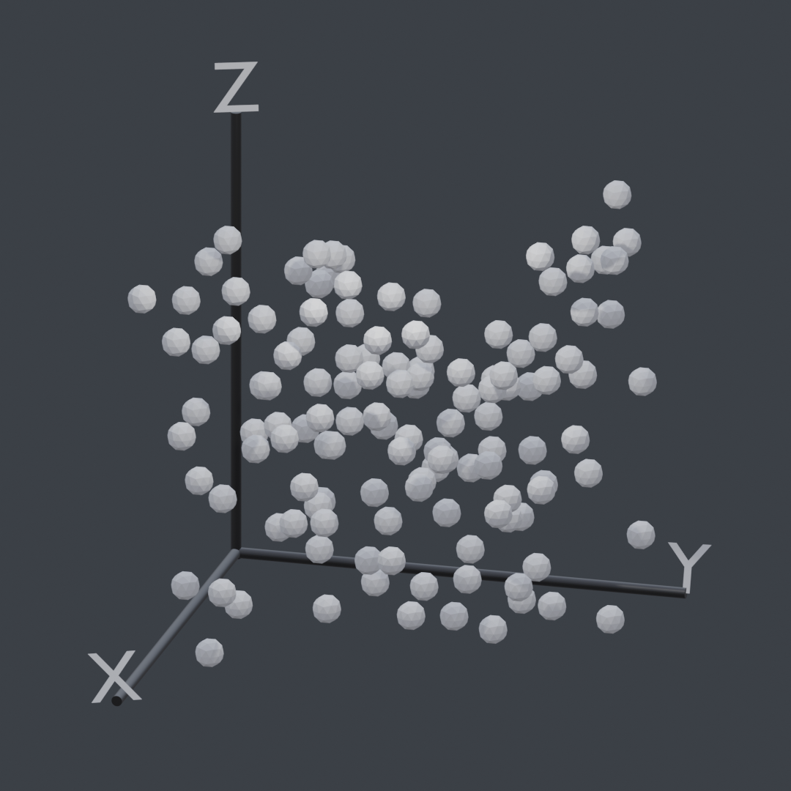

Data Visualization Addon for Blender3d
I’ve been using the 3d vfx application Blender for quite some time now (since 2010ish) and decided it would be fun to mess around with it for some other use cases. Using it as a way to visualize data.
While Blender is commonly used as a tool for digital art, I thought it would be interesting to integrate some type of data loading/parsing. This would also help me hone my python skills. I used to dislike Python syntax a lot, but it being so universal (it’s everywhere.. EVERYWHERE!) I’ve grown to like it.
And Blender, being completely open source and surprisingly easy to modify with their Python API, seemed like the perfect choice to learn more about python
Scraping the Surface
To get the graph working, some kind of instantiation was needed. After looking through the documentation, I managed to get some cubes on the screen! Needless to say I was excited for what I had planned. Hooray for cubes!!
Houston, We Have a Scatter Plot
After figuring out importing and the ins and outs of the Python API, I decided the first thing to attempt was a scatter plot. Not too long and I got some objects spawning for each value…
The code itself is very simple. It just takes the value of each defined row in the CSV file, and generates a new point. Then it appends the values from each row of the CSV to the point’s position.
|
|
Axis Generation
To add some simple axis indicators to our lovely scatter plot, I spawned in some cylinders and adjusted their sizing according to the range of our dataset.
|
|
The above code is a snippet of the Z-Axis generation. The line (max(zAxisValues) + abs(min(zAxisValues))) + obj_dimensions[2] adds together the largest number and the absolute value of the smallest number so the Z axis spans the entirety of the graph’s height.
The obj_dimensions[2] is the size of our point in the Z axis. We want to add this to our z_axis_size so our axis spans the distance from the lowest point’s bottom to the highest point’s top (assuming our origin is in the center).
We also add axisWidth so we account for our x and y axis cylinder sizes.
Similar calculations are done for the other dimensions so you get a consistent scaling of axis lines.
|
|
The only difference for the X and Y is that we need to rotate them. Hence the bpy.context.object.rotation_euler = (0,math.radians(90),0).
Above is a little sketch I made while I was away from the code. Made implementing it shortly after much easier.
User Defined Values & UI
The real time-consuming part was adding all of the features I wanted. I thought it would be nice to allow for custom object spawning, custom colors, and a whole bunch of other user-customizable options.
So as of now, it only does one thing. And that one thing is scatter plots.
Currently as of 3/30/21 the features include…
- Custom object spawning
- Axis color selection
- Automatic Label generation

Right Now…

I really enjoy working on this project. I’m currently working on some different chart options which should be super cool!
Be sure to check out the actual project page I have here on my website or the github repo for any future updates!
Thanks for reading!